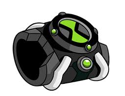

a lo largo de las distintas temporadas han habido diferentes objetos que son relevantes para la trama, en esta pagina se explicara cuales son y sus funciones
es un aparato extraño con formade reloj el cual permite que ben tennyson pueda convertirse en 10 aliens diferentes teniendo un limite de tiempo que ronda los 10 minutos y que posterior a eso el reloj debe recargarse
es la casa rodante en la que vive el abuelo max en la cual esta llevando a ben y gwen al rededor del pais esta al final de la primera temporada demuestra tener un tipo de nitro y estar muy bien blindado

esta es una pistola que utilizan los plomeros, su funcion es abrir un portal interdimensional hacia la dimension del vacio nulo la cual es utilizada como una prision espacial para los peores criminales del universosiendo aparentemente imposible escapar de ahi.
en esta temporada el reloj demuestra tener mas de 10 aliens al haber sido desbloqueados 2 nuevos, ademas que por un eror de ben este demuestra el poder cambiar de alien en alien sin tener un limite de tiempo junto con poder destransformarse a voluntad esto se desbloquea temporalmente debido a que ben reinicia el omnitrix perdiendo estas funciones.
en esta temporada el camper resulta ser un vehiculo de los p'lomeros con varias armas y un modo turbo en el cual por medio de unos propulsores va muchop mas rapido.
en esta temporada el omnitrix demuestra poder el escanear el ADN de una espicie que no posea en su base de datos, uniendolo al catalogo de aliens activo.
trasun conflicto con harmcaster gwen termina quedandose con su libro de hechizos aprendiendo a usar magia de forma muy limitada y algo impredecible.

en esta temporada no se muestra mas informacion de laanteriormente mencionada fuera de que resulta dañado y pierde su capacidad de usar el modo turbo.
durante esta ultima temporada el omnitrix demuestra el poder desbloquear alienigenas por medio de comandos,demostrado por su reador azmuth tambien demuestra ser sueptible a grandes antidades de energia demostrando tener un modo de autodestruccion,con la cual solo su onda expansiva es capaz de destruir el universo.
en esta temporada gwen demuestra poder usar su magia con mayor facilidad sin necesidad de estarlo leyendo constantemente, pudiendo usarla con mayor facilidad.
en esta temporada el camper logra ser reparado recumperando su modo turbo